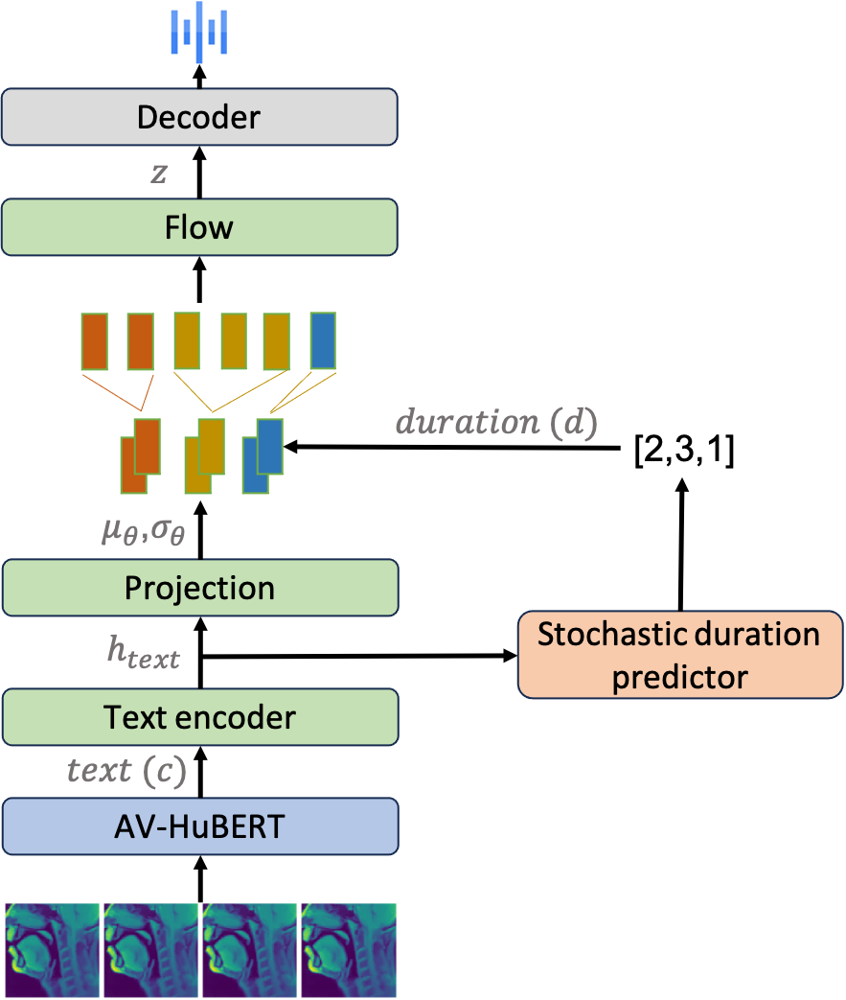

MRI2Speech: Speech Synthesis from Articulatory Movements Recorded by Real-time MRI
Neil Shah1,2, Ayan Kashyap1, Shirish Karande2, Vineet Gandhi1
1International Institute of Information Technology, Hyderabad, India
2TCS Research, Pune, India
Accepted at IEEE ICASSP 2025
International Conference on Acoustics, Speech, and Signal Processing
Hyderabad, India
Abstract:
Previous real-time MRI (rtMRI)-based speech synthesis models depend heavily on noisy ground-truth speech. Applying loss directly over ground truth mel-spectrograms entangles speech content with MRI noise, resulting in poor intelligibility. We introduce a novel approach that adapts the multi-modal self-supervised AV-HuBERT model for text prediction from rtMRI and incorporates a new flow-based duration predictor for speaker-specific alignment. The predicted text and durations are then used by a speech decoder to synthesize aligned speech in any novel voice. We conduct thorough experiments on two datasets and demonstrate our method's generalization ability to unseen speakers. Our method achieves a 15.18% Word Error Rate (WER) on the USC-TIMIT MRI corpus, marking a huge improvement over the current state-of-the-art.
Proposed Method

System diagram of the inference process: AV-HuBERT predicts text from silent rtMRI videos. A trained duration predictor expands the phoneme representations, which are mapped to the acoustic space using a normalizing flow, allowing the decoder to synthesize speech.
Note: Samples for comparison are from demo videos of previous work. "Otani23" is the state-of-the-art method for MRI-to-Speech synthesis. Link to paper.
Comparing samples on USC-TIMIT MRI dataset
ID
Ground-truth Text
Input MRI
Otani23
Ours (Original speaker)
Ours (LJSpeech speaker)
usctimit_mri_m3_016_020_1
ALIMONY HARMS A DIVORCED MAN'S WEALTH
usctimit_mri_m3_071_075_1
COOPERATION ALONG WITH UNDERSTANDING ALLEVIATE DISPUTE
usctimit_mri_m3_086_090_2
CALL AN AMBULANCE FOR MEDICAL ASSISTANCE
usctimit_mri_m3_176_180_1
THEY ENJOY IT WHEN I AUDITION
Comparing samples on ArtSpeech Database 1
ID
Ground-truth Text
Input MRI
Ours (Original speaker)
Ours (Novel LJSpeech speaker)
P10_S13_1
Elle a tout faux.
P7_S14_5
Le sextuple adjoint aux sports a un caillot au cerveau.
Samples from unseen speaker across USC-TIMIT MRI and ArtSpeech Database 1
Database
Unseen speaker ID
Unseen sample ID
Ground-truth Text
Input MRI
Ours (Original speaker)
Ours (LJSpeech speaker)
USC-TIMIT MRI
F1
usctimit_mri_f1_276_280_2
the meeting is now adjourned
USC-TIMIT MRI
M4
usctimit_mri_m1_101_105_5
YOUNG CHILDREN SHOULD AVOID EXPOSURE TO CONTAGIOUS DISEASES
ASD1
P4
P4_S5_4
Crabes bagarreurs.
ASD1
P8
P8_S12_5
Couds ta chemise.
Ablation study: Synthesizing speech by masking lip movements in the input rtMRI video. (Masked Lip)
Database
speaker ID
Ground-truth Text
Input MRI
Ours (Original speaker)
Ours (Novel speaker)
USC-TIMIT MRI
usctimit_mri_f1_356_360_5
the fish began to leap frantically on the surface of the small lake
USC-TIMIT MRI
usctimit_mri_m3_011_015_3
the museum hires musicians every evening
USC-TIMIT MRI
usctimit_mri_f4_026_030_5
young people participate in athletic activities
Ablation study: Synthesizing speech solely from the visible lip movement in the input rtMRI video. (Cropped Lip)
Database
speaker ID
Ground-truth Text
Input MRI
Ours (Original speaker)
Ours (Novel speaker)
USC-TIMIT MRI
usctimit_mri_f2_201_205_5
keep the thermometer under your tongue
USC-TIMIT MRI
usctimit_mri_f5_316_320_4
according to my interpretation of the problem two lines must be perpendicular